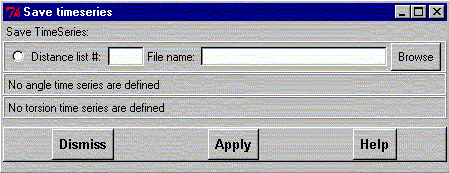

**************************************************************************
Copy time series to disk widget
Leif Laaksonen CSC 1998
**************************************************************************
Copy time series data to a file on the disk.
Select the type of time series array and the number of the distance, angle or torsion array to be copied to the disk. Give the file a name direct or choose a name using the file browser by clicking the Browse button.
To write the information on disk press the the Apply button.

Line command: see copy command
**************************************************************************
LUL/1998
**************************************************************************